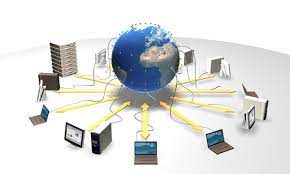

Que es la red MAN?
01 de Marzo 2024 Franklin Rdriguez
La red MAN, que significa Red de Área Metropolitana (Metropolitan Area Network en inglés), es un tipo de red de comunicación de datos que cubre un área geográfica más extensa que una red de área local (LAN) pero es más pequeña que una red de área amplia (WAN). Una MAN generalmente abarca una ciudad o una región metropolitana y conecta múltiples ubicaciones, como edificios o campus dentro de esa área..
Características principales de una MAN:
Tamaño geográfico:
Cubre un área geográfica más extensa que una Red de Área Local (LAN) pero es más pequeña que una Red de Área Amplia (WAN), generalmente abarcando una ciudad o una región metropolitana.
Conectividad de múltiples ubicaciones:
Conecta múltiples ubicaciones o sitios, como edificios, campus o instalaciones dentro de la zona metropolitana.
Velocidades de transmisión:
Ofrece velocidades de transmisión de datos más altas en comparación con las LAN, lo que permite una comunicación eficiente entre diferentes ubicaciones.
Tecnologías de transmisión:
Puede utilizar una variedad de tecnologías de transmisión, como fibra óptica, cableado coaxial, enlaces inalámbricos u otras tecnologías, dependiendo de los requisitos específicos y la infraestructura disponible.
Proporciona servicios de alta calidad:
Diseñada para ofrecer servicios de alta calidad y confiabilidad en términos de velocidad, ancho de banda y disponibilidad.
Control y gestión:
Puede incluir herramientas y protocolos de control y gestión para administrar eficientemente la red y garantizar su rendimiento óptimo.
Enlace entre LAN y WAN:
Funciona como un enlace intermedio entre las redes de área local (LAN) y las redes de área amplia (WAN), facilitando la conexión y la comunicación entre ubicaciones locales y remotas.
Escalabilidad:
Diseñada para ser escalable, lo que significa que puede expandirse para incluir nuevas ubicaciones o adaptarse a cambios en los requisitos de la red.
Seguridad:
Implementa medidas de seguridad para proteger la integridad y la confidencialidad de los datos transmitidos a lo largo de la red.
Aplicaciones diversas:
Puede soportar una variedad de aplicaciones, desde servicios de voz y datos hasta aplicaciones multimedia y servicios en la nube, según las necesidades de los usuarios y las organizaciones.
Evolucion de la red MAN
 Tecnologías Iniciales:En las etapas iniciales, las MAN se establecieron mediante tecnologías de transmisión de datos como el cableado coaxial y enlaces de microondas. Estas soluciones proporcionaban una conectividad mejorada en comparación con las LAN, pero aún no alcanzaban la amplitud de las WAN.
La introducción y adopción generalizada de la fibra óptica en las redes MAN marcó un hito importante. La fibra óptica permitió velocidades de transmisión mucho más altas, mayor capacidad de ancho de banda y distancias más largas entre nodos, mejorando significativamente la eficiencia y la calidad de la conectividad.
La estandarización de protocolos y tecnologías, como Ethernet y el protocolo de Internet (IP), ha facilitado la interoperabilidad y la compatibilidad entre diferentes dispositivos y componentes de red en las MAN. Esto ha contribuido a una mayor flexibilidad y facilidad de gestión.
La proliferación de tecnologías inalámbricas, como WiMAX y LTE, ha permitido la creación de MAN inalámbricas. Estas soluciones eliminan la necesidad de cableado físico y ofrecen mayor movilidad, lo que es beneficioso para entornos urbanos donde la instalación de cables puede ser costosa o difícil.
La virtualización de redes ha permitido una mayor flexibilidad y eficiencia en la gestión de recursos en las MAN. La capacidad de crear redes virtuales y asignar recursos dinámicamente ha mejorado la adaptabilidad de estas redes a las cambiantes demandas de tráfico y servicios.
La convergencia de servicios, como voz, datos y video, en una sola infraestructura de red ha sido una tendencia importante. Las MAN modernas están diseñadas para admitir una amplia gama de aplicaciones y servicios, facilitando la integración de tecnologías y la provisión de servicios diversos.
En algunos casos, las MAN han incorporado redes ópticas pasivas para mejorar la eficiencia energética y reducir los costos operativos. Las PON ofrecen una solución eficiente para la entrega de servicios de banda ancha y permiten compartir recursos de manera más efectiva.
La implementación de redes 5G en entornos metropolitanos está transformando aún más las MAN al proporcionar velocidades de conexión ultra rápidas y capacidades de manejo de dispositivos masivos. Esto es crucial para respaldar aplicaciones de Internet de las cosas (IoT) y servicios avanzados.
Hardware de la red MAN

El hardware de una Red de Área Metropolitana (MAN) incluye una variedad de componentes diseñados para facilitar la conectividad y la comunicación eficientes dentro de una zona metropolitana. Estos componentes pueden variar según la tecnología y la infraestructura específicas utilizadas, pero a continuación se presentan algunos de los elementos comunes en el hardware de una MAN:
Fibra Óptica:
La fibra óptica es un componente clave en muchas redes MAN modernas. Se utiliza para transmitir datos a través de pulsos de luz, ofreciendo velocidades de transmisión de datos extremadamente altas y una capacidad de ancho de banda significativa.
Dispositivos de Red (Router, Switch, Concentrador):
Routers, switches y concentradores son dispositivos esenciales para enrutar, conmutar y concentrar el tráfico de datos dentro de la red. Estos dispositivos facilitan la comunicación eficiente entre diferentes ubicaciones y gestionan el flujo de datos.
Equipos Terminales (Terminales de Red):
Los equipos terminales, como computadoras, servidores, impresoras y otros dispositivos conectados a la red, son parte integral del hardware de una MAN. Estos dispositivos generan, reciben y procesan datos en la red.
Dispositivos de Interconexión:
Dispositivos como repetidores, amplificadores y transceptores se utilizan para extender la distancia de transmisión y mejorar la calidad de la señal en la red.
Tecnología Inalámbrica:
En las MAN inalámbricas, se utilizan antenas, estaciones base y equipos de transmisión/recepción para establecer conexiones inalámbricas. Estos componentes son esenciales para la movilidad y la conectividad sin cables en la red.
Dispositivos de Seguridad: Firewalls, sistemas de detección de intrusiones y otros dispositivos de seguridad son necesarios para proteger la integridad y la confidencialidad de los datos en la red MAN. Equipos de Conmutación y Enrutamiento Ópticos: En redes MAN que utilizan fibra óptica, se pueden emplear equipos especializados de conmutación y enrutamiento ópticos para gestionar el tráfico de manera eficiente y garantizar una transmisión de datos rápida y confiable.Equipos de Transmisión de Microondas:
En casos de redes MAN que utilizan enlaces de microondas, se implementan equipos de transmisión de microondas, incluidas antenas y equipos de modulación/demodulación, para facilitar la transmisión inalámbrica de datos.
Dispositivos de Gestión de Red:
Sistemas de gestión de red que permiten monitorear, controlar y gestionar la infraestructura de la red, facilitando el mantenimiento y la resolución de problemas.
Dispositivos de Conversión de Medios:
En situaciones donde se utilizan diferentes tecnologías de transmisión, como fibra óptica y cableado metálico, se pueden emplear dispositivos de conversión de medios para facilitar la interoperabilidad.